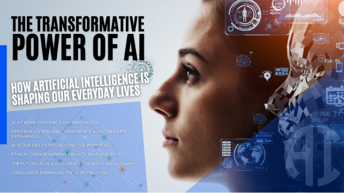

+92 310 0861330
Blog
16 August - Technology
Roadmap for a Front-end Developer 2025?
18 August - Technology
How to be a Front-end developer in 2025?
üöÄ How to Become a Front-End Developer in 2025
Front-end development has always been one of the most exciting paths in tech. In 2025, the role is more dynamic than ever—combining design, coding, and AI-assisted workflows to build user experiences that feel smooth, fast, and modern. If you’re aiming to start your journey as a front-end developer in 2025, here’s a clear roadmap.
üé® Step 1: Master the Foundations (HTML, CSS, JavaScript)
The fundamentals never change:
* HTML5 – Structure of every web page.
* CSS3 (Flexbox, Grid, Animations) – Styling and layout techniques.
* JavaScript (ES6+) – Core programming language of the web.
üëâ Pro Tip: Don‚Äôt just learn‚Äîbuild small projects like a portfolio site, to-do app, or landing page.
⚛️ Step 2: Learn Modern Front-End Frameworks
In 2025, companies expect developers to know at least one popular framework:
* React.js (still the most in-demand)
* Next.js 15+ (server-side rendering, full-stack features)
* Vue.js 4 or SvelteKit (lightweight, fast-growing alternatives)
These frameworks make development faster and improve scalability.
üõ† Step 3: Explore Developer Tools & Workflows
Modern front-end isn’t just about coding—it’s about efficiency. Learn:
* Version Control (Git & GitHub)
* Package Managers (npm, pnpm, yarn)
* Build Tools (Vite, Webpack, Parcel)
* CSS Frameworks (Tailwind CSS, Chakra UI)
* AI Code Assistants (GitHub Copilot, JetBrains AI)
üëâ In 2025, AI-assisted coding is not optional‚Äîit‚Äôs a productivity booster.
üåê Step 4: Understand APIs and Backend Basics
A front-end dev often communicates with servers. Learn how to:
* Fetch data using REST APIs and GraphQL
* Work with authentication (JWT, OAuth)
* Understand basic backend concepts (Node.js, Express)
This makes you a more complete developer and prepares you for full-stack roles.
üé® Step 5: UI/UX & Accessibility
Front-end developers are responsible for user experience, not just code.
* Learn responsive design (mobile-first approach).
* Follow WCAG 2.2 accessibility standards.
* Understand design tools like Figma or Adobe XD.
üëâ Accessibility is a must-have skill in 2025, especially for global products.
ü§ñ Step 6: Embrace AI & Automation in Web Development
AI has changed how websites are built. In 2025:
* AI design-to-code tools convert wireframes into working prototypes.
* AI testing tools automatically check accessibility and performance.
* Chatbots and AI integrations are common in front-end projects.
A smart developer knows how to use AI without depending entirely on it.
üßë‚Äçüíª Step 7: Build Projects & Contribute to Open Source
Your portfolio matters more than your degree.
* Create real-world projects (e-commerce, dashboards, blogs).
* Share code on GitHub.
* Write blogs or tutorials to build credibility.
üìà Step 8: Stay Updated
The front-end world evolves every 6–12 months. In 2025:
* Follow blogs like Smashing Magazine, Dev.to, CSS-Tricks.
* Watch for updates in React, Next.js, and AI web tools.
* Join communities on Reddit, Discord, and LinkedIn.
✅ Final Thoughts
Becoming a front-end developer in 2025 isn’t just about learning syntax—it’s about problem-solving, creativity, and adaptability.
If you:
✔ Master the fundamentals
✔ Learn a framework
✔ Use AI wisely
✔ Keep building projects
…you’ll be on your way to becoming a job-ready front-end developer in 2025.
18 August - Technology
Why you should learn UI/UX as Web Developer?
10 July - Technology
Is there need to learn UI/UX for Front-end Developer?
üé® Why You Should Learn UI/UX as a Web Developer
As a web developer, it’s easy to focus only on writing clean code, mastering frameworks, and optimizing performance. But in today’s digital world, coding alone isn’t enough. If your websites are hard to use or unattractive, users will leave—no matter how perfectly built they are. That’s where UI/UX design comes in.
üîë What is UI/UX?
* UI (User Interface): The look and feel of your website—buttons, colors, layouts, and visual elements.
* UX (User Experience): The way users interact with your website—navigation, accessibility, and ease of use.
Together, they ensure that your website is not only functional but also enjoyable.
üöÄ Why UI/UX Matters for Web Developers
* Better User Experiences — Learn to design intuitive, user-friendly interfaces that keep visitors engaged.
* Problem Solving, Not Problem Making — Tackle real issues like smoother navigation, easier checkouts, and accessible forms.
* Improved Collaboration — Speak design language to work faster and clearer with designers.
üéØ The Competitive Advantage
* Stand Out in the Job Market — Be more than “just a coder” with design thinking skills.
* Command Higher Salaries — Wear multiple hats and bring extra value to teams.
* Future-Proof Your Career — Tech + design hybrids are increasingly in demand.
üåü The Creative Edge
UI/UX gives developers a creative outlet. Beyond logic and functions, you craft experiences that delight users and turn code into something memorable.
✅ Final Thoughts
In 2025 and beyond, developers who learn UI/UX will always be a step ahead. You won’t just build websites that work—you’ll build websites that connect with people.
Remember:
Code makes a site function.
UI/UX makes it unforgettable.
 10 July - Technology
10 July - Technology
Top 5 side hustles you can start in 2025?
18 August - Technology
Top 5 side hustles you can start in 2025?
üíº Top 5 Side Hustles You Can Start in 2025
The world of work is changing fast, and in 2025, side hustles are more popular than ever. Thanks to AI, remote work, and digital platforms, it’s easier to earn extra income while building valuable skills. Whether you’re a student, a full-time professional, or just looking to diversify your income, here are the top 5 side hustles to start in 2025.
1️⃣ Freelance Web Development & Design
With businesses moving online, web development and design remain high-demand skills. Platforms like Upwork, Fiverr, and Toptal connect you with clients worldwide. Even better, AI tools can speed up coding and design, making it easier to deliver projects faster.
üëâ Why it works in 2025: Businesses need modern, user-friendly websites, and you can charge premium rates if you also offer UI/UX skills.
2️⃣ AI-Powered Content Creation
From blog posts to social media captions, AI tools like ChatGPT, Jasper, and Canva make content creation faster than ever. Many businesses want affordable content services but still need a human touch to edit and add personality.
üëâ Why it works in 2025: AI is a helper, not a replacement‚Äîclients still pay well for content that feels authentic and creative.
3️⃣ E-Commerce & Print-on-Demand
Platforms like Shopify, Etsy, and Redbubble allow you to sell products without holding inventory. With print-on-demand, you design t-shirts, mugs, or posters, and suppliers handle printing and shipping.
üëâ Why it works in 2025: Niche products + social media marketing = a profitable side hustle with low upfront costs.
4️⃣ Online Tutoring & Digital Courses
If you have expertise in coding, design, languages, or any skill, you can teach it online. Platforms like Udemy, Skillshare, and even YouTube allow you to build a global audience.
üëâ Why it works in 2025: More people are learning online, and micro-courses (short, focused lessons) are trending big.
5️⃣ Social Media Management & Personal Branding
Every brand and influencer needs a strong online presence. If you’re good with content calendars, audience engagement, and platforms like Instagram, TikTok, or LinkedIn, you can manage accounts for businesses.
üëâ Why it works in 2025: Many small businesses don‚Äôt have time for social media and are willing to pay for consistent, creative management.

10 July - Technology
AI – A Threatening Storm or a Transformative Sunrise?
10 July - Technology
AI the threat or tranformative power?
ü§ñ AI: Threat or Transformative Power?
Artificial Intelligence (AI) is no longer just a buzzword—it’s a reality shaping every industry in 2025. From healthcare to education, from design to software development, AI is everywhere. But the big question remains: Is AI a threat to our future, or a transformative power that will push humanity forward?
⚠️ The Threat Side of AI
* Job Displacement: Automation is replacing repetitive and manual tasks, raising fears that many jobs could disappear. Roles in manufacturing, customer service, and even content creation are at risk.
* Bias & Ethical Concerns: AI systems are only as good as the data they’re trained on. Biased data can lead to unfair decisions in hiring, law enforcement, or lending.
* Loss of Human Touch: Overreliance on AI may reduce creativity and empathy in areas where human connection is irreplaceable.
üåç The Transformative Power of AI
* Efficiency & Productivity: AI automates repetitive tasks, freeing humans to focus on creativity, strategy, and problem-solving.
* Healthcare Breakthroughs: From detecting diseases early to personalizing treatments, AI is saving lives and transforming healthcare.
* Accessibility for All: AI-powered tools like voice assistants, automated translations, and text-to-speech make technology accessible to people with disabilities and different languages.
üîë Finding the Balance
AI itself is neither good nor bad—it’s a tool. The real impact depends on how we choose to use it:
* With strong regulations, AI can be fair and safe.
* With education, people can reskill for AI-powered industries.
* With ethics, AI can empower rather than exploit.
© 2025 All Rights Reserved by meetahmed.